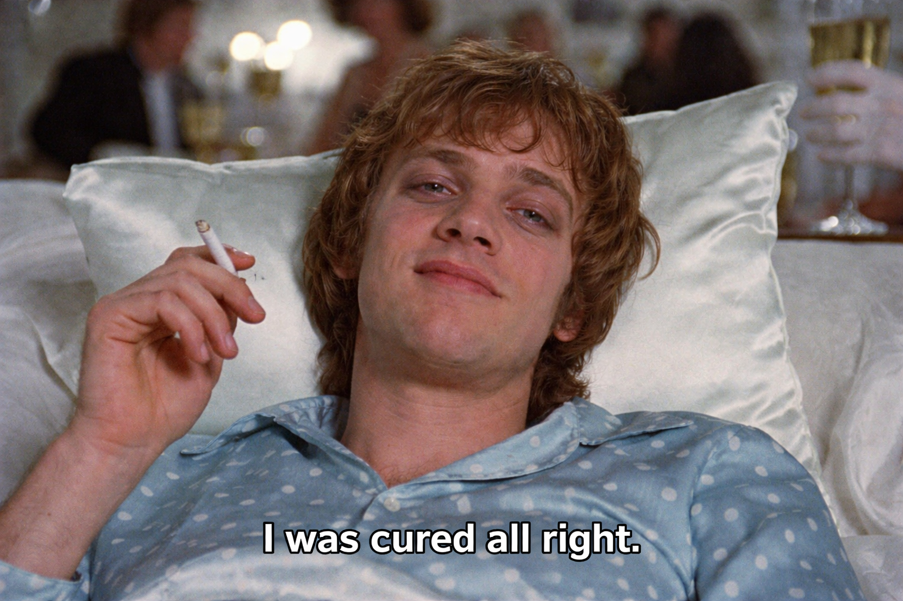

Is Psychology Overdiagnosing Ordinary Human Responses?
If we think of a human being as a machine, then external inputs, once encoded and processed, produce corresponding outputs. The encoding differs from person to person by birth — faced with the same input, two people produce different outputs. Take cilantro: some find it delicious, others find it nauseating. Medicine does not classify the nausea response to cilantro as a disease; it simply calls it difference, because eating cilantro impairs no one's work, study, or daily life, and each of us keeps the right to refuse it. But suppose ninety percent of jobs were in cilantro-processing plants — factories churning out cilantro-flavored instant noodles, say — and those who could eat cilantro were deemed "normal" and "rational," while those who could not were branded "inefficient" or "picky." Would "cilantro intolerance" then become a disorder? This is not a joke. It is, in fact, the very question psychiatric diagnosis is trying to answer: Who needs to be corrected? Who is adapting well? Where does responsibility lie?
The DSM-5 weaves together three layers of evidence: the patient's subjective experience, the observations of others, and objective physiological and behavioral indicators. Diagnosing depression, for instance, requires persistent low mood reported by the patient, psychomotor agitation or retardation noticed by others, and significant changes in weight, among other signs. This subjective–observational–objective layering prevents us from pathologizing private suffering alone — otherwise the grief of bereavement, or the shock of a natural disaster, would be labelled depression. And yet this framework leaves one question open: how do we decide which context renders sadness normal? Where do the borders of diagnosis actually lie?
"Mental disorders are severe disturbances of cognition, behavior, or emotional regulation that prevent the organism from functioning normally." The operative phrase is cannot function normally: intervention is deemed warranted only when a person fails to function. This is why chronic anxiety, insomnia, and attention deficits attract so much clinical and media attention, while nihilism, existential emptiness, and political depression go undiagnosed. The former interfere with productive output and can be addressed at the level of the individual; the latter look more like social ills, whose resolution would demand that we interrogate our most fundamental social values and the meaning of work itself. Herein lies the limit of the diagnostic manual: it only names the suffering it knows how to handle.
If the preceding discussion reads as psychology isn't diagnosing enough, I want now to turn to the opposite phenomenon — the proliferation of psychiatric categories and the ever-lowering threshold for a diagnosis. To begin with, the word "symptom" is misleading, as though it pointed to some underlying entity. Unlike tumors or cancers, mental illness carries no naturally occurring biomarker to separate the sick from the well, or disorder A from disorder B. The diagnostic threshold and the catalogue of disorders are entirely human constructions. The DSM-5 often imagines a "rational person wholly detached from his own emotions and needs, and entirely indifferent to situational factors." One ADHD criterion, for instance, reads: often avoids, dislikes, or is reluctant to engage in tasks that require sustained mental effort — the implication being that disliking something is a symptom rather than a preference. This standard-centered, rather than person-centered, framework corrodes the relationship between patient and clinician. Consider ADHD again: when a child concentrates intensely on a task that interests him, a clinician should take this as an opening — a door into the child's other curiosities, a clue for tailoring support. Instead, the DSM warns that symptoms may not present during "particularly engaging activities," and instructs the clinician to find a dull task and test whether the child can attend to it. If he cannot, the diagnosis is given. This nudges clinicians toward surface observation and away from a person's real interests and life history, in violation of the person-centered principle at the heart of psychological assessment. A further consequence of this over-diagnosis is that people come to attribute a patient's troubles to private pathology while ignoring social context. The teacher of that ADHD-labelled child, for example, may chalk up his poor grades and social difficulties to a psychological problem — without pausing to consider other factors, such as, say, her own pedagogy.
More and more, people are cast as beings who harbor a treatable mental condition — and the over-diagnosis of ADHD is the clearest case. The mood with which people arrive at a diagnosis varies. For some there is relief, even validation: I'm not lazy; I have ADHD. For others, despair or shame — especially within cultures where mental illness still carries stigma. In a society that prizes efficiency and emotional self-management while rationing empathy, the first response is, unavoidably, a sad one: the diagnostic label becomes the only proof of suffering, the ticket to being understood, the sick-note that grants a temporary leave from the grind. On the other hand, we cannot deny that as psychiatric vocabulary has spread, public understanding has grown and some of the stigma has loosened — and this is diagnosis at its better.
These feelings toward diagnosis can be captured by what is known as the looping effect: diagnostic vocabulary does not merely describe mental states from the outside; it actively shapes how we understand ourselves. Some behaviors are legitimated; some suffering is made visible — I have an avoidant attachment style; I somaticize my emotions. As these terms saturate the internet, people use them to examine themselves, so that by the time someone walks into a clinic, the raw experience has already been filtered and overwritten by the psychology buzzwords circulating online. When enough people do this, clinicians take notice: Why are so many patients presenting this way lately? Experts study the emerging pattern, revise the diagnostic manual, and the new criteria quietly shape the next generation — one full loop closed. Every DSM revision introduces new disorders, and the looping effect is precisely why. Take adult ADHD. Many adults experience inattention, procrastination, and other ADHD-adjacent traits; once ADHD became a household term, more and more people reached for it to describe themselves, which in turn led the DSM-5 to add that symptoms "can persist into adulthood." Of course, a high-pressure, meritocratic society has genuinely overloaded many people's neural circuitry as well — just as, in the opening "cilantro-factory society," cilantro intolerance became a disorder, our fast-moving, fragmented world has made adult ADHD a disorder in kind.
We might say this: the definition of a disorder sits at the intersection of individual traits and social demand. It is imprecise and not wholly objective — yet it responds to the public while also reshaping it. When you sense that something is off, seeking a diagnosis is more a choice than a necessity. It is a tool — one to turn to when you feel you need treatment or medication — but it does not hold the final word on your experience.

References
- From diagnosis to dialogue — reconsidering the DSM as a conversation piece in mental health care: a hypothesis and theory. frontiersin.org
- DSM-5 diagnostic criteria for a major depressive episode. uptodate.com
- WHO definition of a mental disorder. who.int